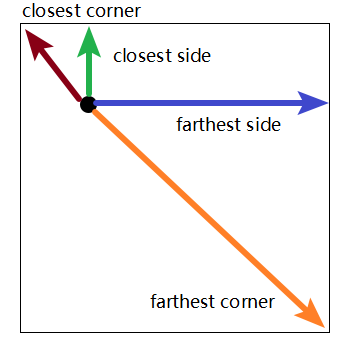
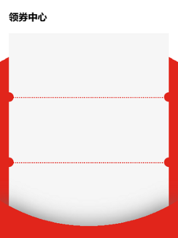

background-image: radial-gradient([shape] [size] at position, start-color, ..., last-color);

background-image: radial-gradient(#1393c7, #f1f2f3);
background-image: radial-gradient(circle at left top, #1393c7, #f1f2f3);
background-image: radial-gradient(circle at top left, #1393c7 50%, #f1f2f3 0);
background-image: radial-gradient(at 0% 0%, transparent 80%, #1393c7 0);
background: radial-gradient(circle 30px at 0% 0%, transparent 50%, #1393c7 0) 0 0/50% 50% no-repeat;
background: radial-gradient(circle 30px at 100% 0%, transparent 50%, #1393c7 0) 0 0/50% 50% no-repeat;
background-image: radial-gradient(circle at 10% 10%, transparent 75%, #1393c7 0), radial-gradient(circle at 5% 20%, transparent 70%, #e44545 0), radial-gradient(circle at -10% 10%, transparent 70%, #00F260 0);
background: radial-gradient(circle 30px at 0% 0%, transparent 50%, #1393c7 0) 0 0/50% 50% no-repeat, radial-gradient(circle 30px at 100% 0%, transparent 50%, #1393c7 0) 100% 0/50% 50% no-repeat, radial-gradient(circle 30px at 100% 100%, transparent 50%, #1393c7 0) 100% 100%/50% 50% no-repeat, radial-gradient(circle 30px at 0% 100%, transparent 50%, #1393c7 0) 0 100%/50% 50% no-repeat;
